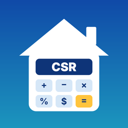

Report a problem or ask a question by opening an issue at https://github.com/richardliao76/easy-mortgage/issues. Please include your iPhone model and iOS version.
Why is the Canadian payment different from the US payment?
Canadian fixed-rate mortgages compound interest semi-annually (twice a year), as required by Canada's Interest Act. US mortgages compound monthly. The same rate therefore gives a slightly lower payment in Canada.
What is accelerated bi-weekly?
Your monthly payment divided by 2, paid every two weeks (26 times a year). That adds up to one extra monthly payment each year, so the mortgage is paid off sooner and you pay less interest.
Are taxes and insurance included?
No. Results cover principal and interest only. Property tax, mortgage insurance and lender fees are not included.
Is my information saved?
Only your last inputs, and only on your iPhone. See the Privacy Policy.
Easy Mortgage provides estimates only and is not financial advice. Check with your lender or a licensed mortgage professional before making a decision.